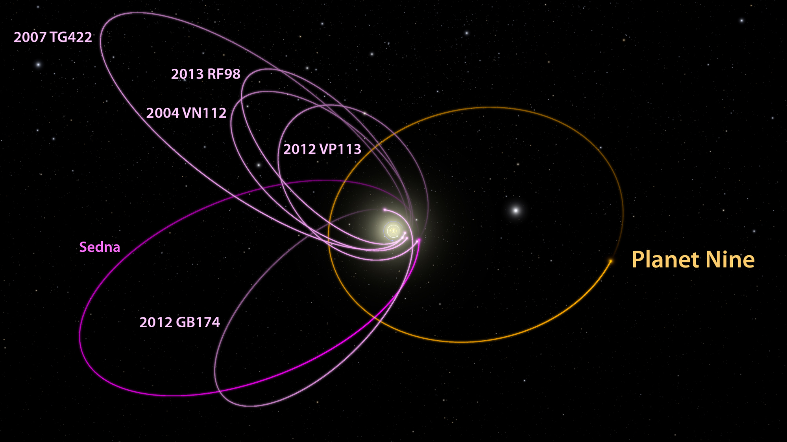

The Silicon Penguin


Just come over to our site and buy your very own infinite range spyglass for yourself or a friend for only 10 easy payments of $50!*
Pluto's Replacement?
New discoveries imply that there may yet be another planet to add to our solar system. The new planet would be about 10 times Earth's mass and 3 times its size. It is estimated to be 200 to 1200 times farther away from the sun as we are. Its orbit is about 10,000 to 20,000 times as long as ours, making 1 year on the 9th planet equal to 10,000 to 20,000 Earth years. That would make this new planet 20 to 100 billion miles away from us. It is hypothesized to be the core of a Gas Giant by Dr. Morbidelli because of the other estimates of it having a rocky core and a small but thick gaseous atmosphere. The atmosphere is said to be made of hydrogen and helium mostly, making this more of a miniature Neptune than a giant Earth. The hydrogen and helium would act as an insulator, so there might still be some water in deeper layers, but there might not be "enough chemical feedstock" to be habitable.
There were two main objects necessary for this new planet's supposed discovery, the first being 2012VP113. 2012VP113 was discovered in 2014 and named 'Biden' after the vice president. The other is Sedna, which was discovered by Dr. Mike Brown in 2003.
The Planet was found by a combined effort of the astronomers and the simulators they used. The main two astronomers in this study were Mike Brown and Konstantin Batygin. They had noticed earlier that there were many strange orbital patterns in Biden, Sedna, and some other objects in the far reaches of the solar system. When they entered the orbital patterns in their simulator, they noticed that the only way this arrangement could occur is if there was another large object affecting the orbits. This arrangement of six objects in the same region of space has on its own a 1 in 14,000 chance of skewing at roughly the same angle, but, miraculously, these planets seem to be doing just that, so there must be another large mass interfering with the orbits.
There has yet to be any visual evidence to confirm these theories, but they are definitely working on it. There is a telescope in Hawaii called the Subaru Telescope which is on the search, and there is another in Chile that is being constructed that should be able to see it when completed. One of the main problems is the planet's unknown position in its orbit which could mean that the planet is on the other side of the solar system and we may never see it.
This is not the first time someone announced that there is another planet with us in space. Percival Lowell supposedly found Planet X in 1930, but it was never really found. The search did lead to the discovery and eventual demotion of Pluto. Although this is by far not the first supposed planetary discovery, it is definitely the most convincing.